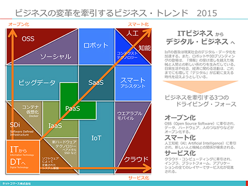
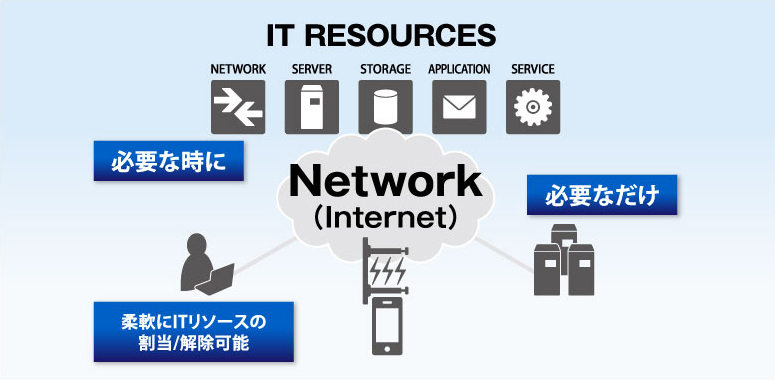
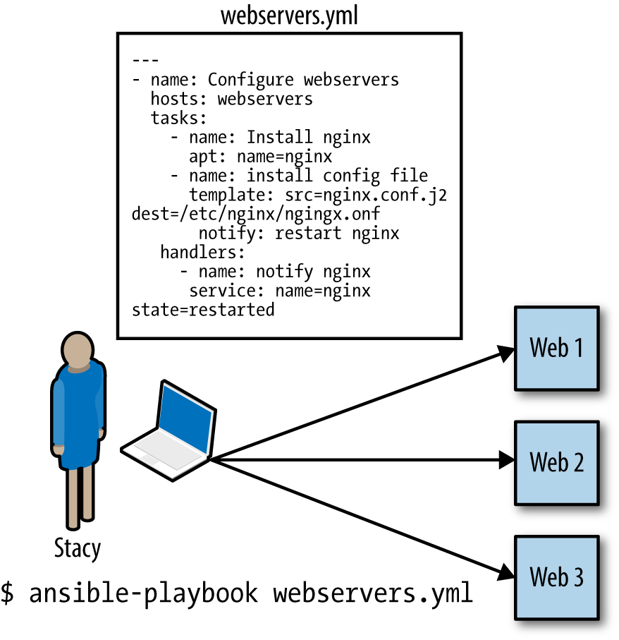
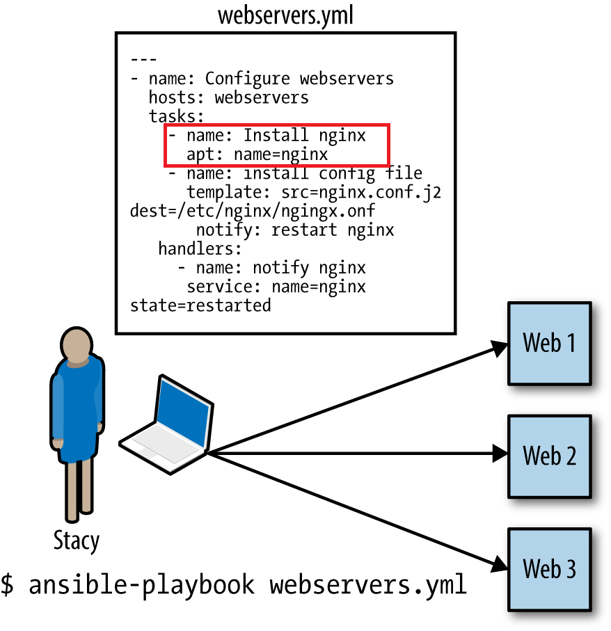
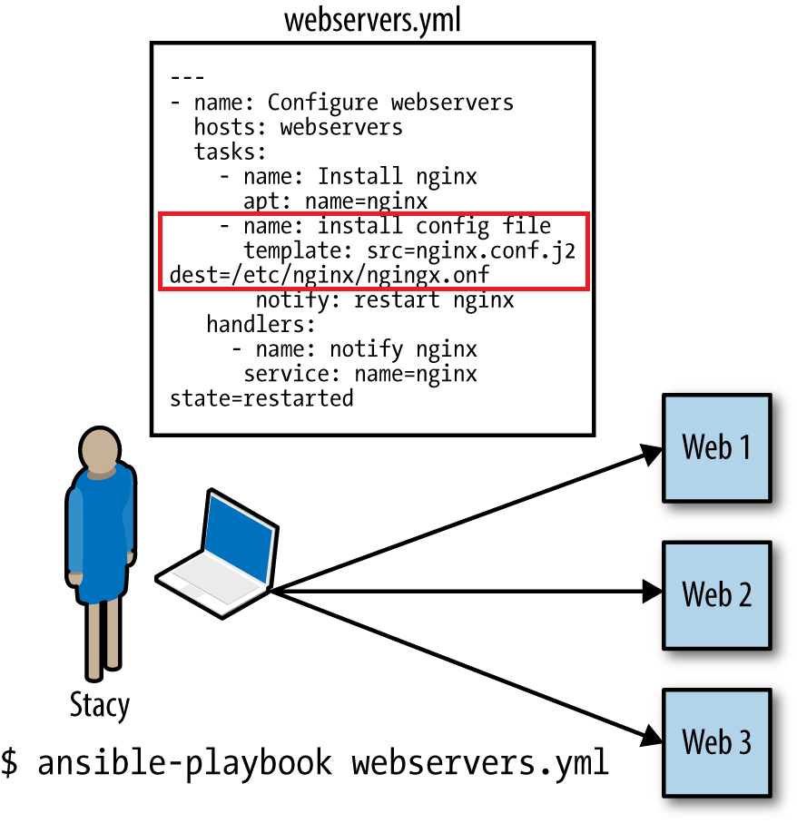
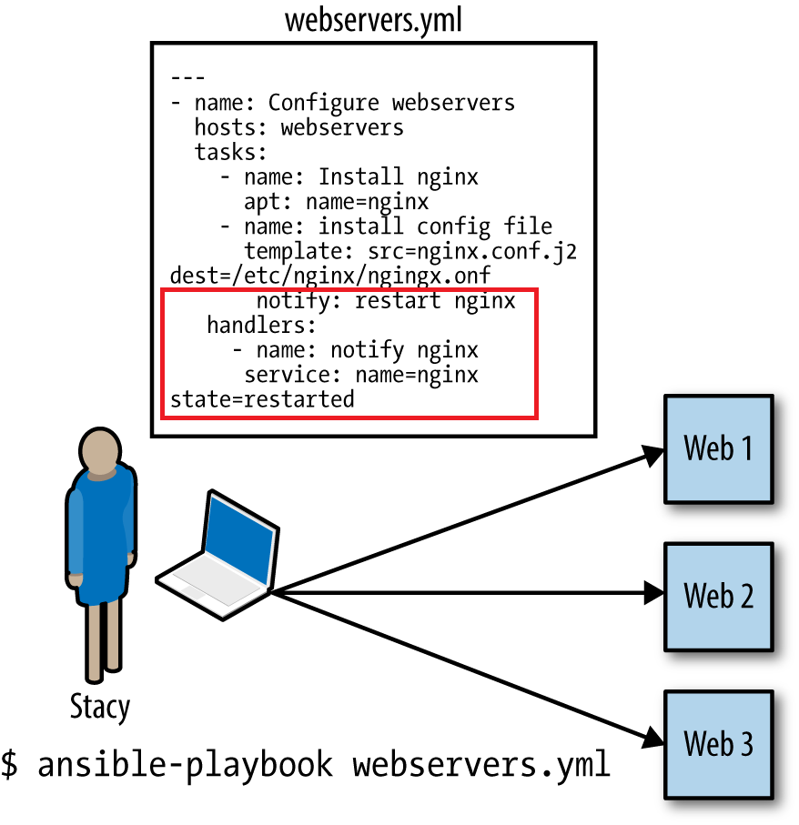

class: center, middle #野地グループの発表です <center> </center> --- class: center, middle # いんふらえんじにあ # .red[Dead or Alive?] <div align="center"> <img src="http://sf-mitu.link/wp-content/uploads/2015/07/%E3%82%AB%E3%82%A4%E3%82%B8.jpg" style="width:55%;height:auto;" /> </div> --- class: middle, center ### ※このプレゼンはサーバよりのお話です --- class: middle ###インフラエンジニアの皆さん ###新技術、トレンドへの対応はお済みですか？ --- # ITの業界動向 <div align="center">  </div> <!-- .center[] --> --- class: middle ###もうビックデータの盛り上がりも過去のもの ###去年叫ばれたIOTも飛び越して今度はAI(人工知能)がやってきます ###目まぐるしい技術の進歩ですよね --- class: middle ##私は大丈夫！ ##インフラエンジニアとして日々研鑽してるし、CCNAだってLPICだって持ってるよ --- -- ##（vMotionで仮想マシンを移動して・・・？ ラックからサーバ外せばいいの・・・？） -- ##（え・・・クラウド・・・？ ハイブリッドにするってどういうこと・・・？） -- ##（え・・・Ansible・・・？ apacheの設定をコードで書いてって何言ってんのこの人・・・！？） --- class: middle <div align="center"> </div> --- class: middle ##こうならないようにインフラエンジニアとして生きていく道を考えていきましょう --- # Agenda -- ## 1) 知っておきたい技術 -- ## 2) ITエンジニアとして成長し続けるためには -- ## 3) まとめ --- # 知っておきたい技術 -- # - Virtulization -- # - Cloud Computing -- # - Infrastracture as Code --- #Virtulization (1/2) <div align="center"> <img src="http://www2.mind.co.jp/virtual/images/virtual_system_a01.jpg" style="width:75%;height:auto;" /> </div> ####現在ではスタンダードな技術、物理的なハードウェアで動作しているOSをソフトウェアでエミュレートされた環境(仮想マシン)で動作させることができる。 ####マシンリソースに余裕のあるサーバを統合するなど、リソースを柔軟に活用できるメリットがある。 ####また、仮想マシンは他の物理サーバへ移動することができ、可用性も高い。 --- #Virtulization (2/2) ###物理的なサーバからソフトウェアとして"抽象化"されたサーバが増加 -- .red[⇒ 論理的にシステム構成を把握する力が必要] --- #Cloud Computing (1/4) <div align="center"> </div> .left-column[ <img src="img/azure.jpg" style="width:95%;height:auto;" /> ] .right-column[ ] --- #Cloud Computing (2/4) <div align="center">  </div> ####利用するサーバ郡がインターネットの向こう側にあり、利用量に応じて柔軟にキャパシティを増減できることが特徴 ####サービスは、コンピュータリソース(サーバ、ネットワーク、ストレージ)、アプリケーション、監視と障害時の自動復旧など様々なものを提供している。 --- #Cloud Computing (3/4) ####<< クラウドサービスの種類 >> .center[] --- #Cloud Computing (3/4) ####<< クラウドサービスの種類 >> .center[] .center[ #IaaS = Infrastructure as a Service ] --- #Cloud Computing (3/4) ####<< クラウドサービスの種類 >> .center[] .center[ #PaaS = Platform as a Service ] --- #Cloud Computing (3/4) ####<< クラウドサービスの種類 >> .center[] .center[ #SaaS = Software as a Service ] --- #Cloud Computing (3/4) ####<< クラウドサービスの種類 >> .center[] ###サービスを利用することで従来の構築やアプリケーション開発の必要性が薄れる --- #Cloud Computing (4/4) ###クラウド利用による従来の構築案件(オンプレミス)の減少 -- ### = 要するエンジニアの人員減 -- .red[⇒クラウドに対応できないエンジニアは需要が低くなる可能性あり] --- #Infrastracture as Code (1/4) <div align="center"> <img src="http://www.rohit.io/res/posts/ansible-is-awesome/ansible-logo.png" style="width:45%;height:auto;" /> </div> .right-column[ <img src="http://devops.com/wp-content/uploads/2015/11/Chef_HORl_CCan_Reg.png" style="width:95%;height:auto;" /> ] .left-column[ <img src="https://carlossanchez.files.wordpress.com/2012/03/puppet-labs-logo.png" style="width:95%;height:auto;" /> ] --- #Infrastracture as Code (2/4) .right-column[ ] .left-column[  ] --- #Infrastracture as Code (2/4) .right-column[ - nginxをインストールする ] .left-column[  ] --- #Infrastracture as Code (2/4) .right-column[ ] .left-column[  ] --- #Infrastracture as Code (2/4) .right-column[ ] .left-column[  ] --- #Infrastracture as Code (2/4) --- #Infrastracture as Code (3/4) <div align="center"> <img src="http://www.kobelcosys.co.jp/column/itwords/image/k1306.jpg" style="width:85%;height:auto;" /> </div> --- #Infrastracture as Code (4/4) ###インフラ管理のフレームワークの出現 = コードでの設定管理 -- .red[⇒ プログラミングの経験がないインフラエンジニアは対応できない] --- #ITエンジニアとして成長し続けるためには -- ##・・・IT技術の進歩は早い、追いついていくにはどうするか？ --- ##1) 自主的な楽習 -- ####→ これは.red_2["MUST"], ITエンジニアを続ける限りついて回るもの。 現場業務、会社の支援だけは技術の進歩のスピードに追いつけない。 -- ##2) 情報収集 -- #### → アンテナを張ること。次に来る業界のトレンド、技術を知る。 -- #### - ネットニュース (ITpro, @IT, CNETなど) -- #### - 技術ブログ (はてな,Qiita) -- #### - ベンダー,有名なエンジニアのフォロー (facebook, twitter) -- #### - 勉強会への参加 (dots, doorkeeper) </b> --- # まとめ -- ###生き残るためには・・・ -- ### 1) 新技術の習得、変化に柔軟に対応していくことは必須 #### ( Virtulization, Cloud Computing, Infrastracture as Code ) -- ### 2) 常にアンテナを張り、業界の流れの先を読む -- ### 3) .red_2[現状に満足しないこと。自ら動き、学んでいく姿勢が大事！！] --- # 最後に・・・ <b> 私たちのプレゼンテーションですが、パワーポイントもpreziも使っていません。 MarkDownを使いHTMLのコードで書きました！ こういった常識に囚われないアプローチができるのもITの魅力ではないでしょうか。 ↓こんな感じネ </b> ```html <!DOCTYPE html> <html> <head> <title>Title</title> <meta http-equiv="Content-Type" content="text/html; charset=UTF-8"/> <style type="text/css"> @import url(http://fonts.googleapis.com/css?family=Yanone+Kaffeesatz); @import url(http://fonts.googleapis.com/css?family=Droid+Serif:400,700,400italic); @import url(http://fonts.googleapis.com/css?family=Ubuntu+Mono:400,700,400italic); body { font-family: 'Droid Serif'; } h1, h2, h3 { font-family: 'Yanone Kaffeesatz'; font-weight: normal; } .remark-code, .remark-inline-code { font-family: 'Ubuntu Mono'; } ``` --- class: middle, center #ITって楽しいね！ #☆---（ゝω・）キャピ --- class: middle center # Wish you a bright future